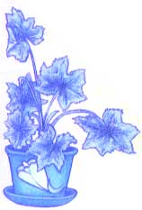
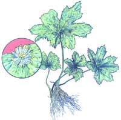
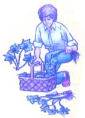

Goldenseal can be a handsome houseplant.
GOLDENSEAL
Foragers almost exterminated goldenseal.
Lately, more and more people have begun to understand just how limited-in both variety and nutritional value-our “modern” diets have become. This realization has sparked a new and wide-spread interest in the culinary and therapeutic uses of herbs…those plants which-although not well-known today-were, just one short generation ago, honored “guests” on the dinner tables and in the medicine chests of our grandparents’ homes. In this regular feature, MOTHER will examine the availability, cultivation, and benefits of our “forgotten” vegetable foods and remedies… and-we hope-help prevent the loss of still another bit of ancestral lore.
A handsome perennial, gold-enseal ( Hydrastis Canadensis ) is native to cool, shaded woodlands in the eastern United States . . . particularly the rich, well-drained highlands of Appalachia. It grows from 6 to 12 inches tall, with a single main leaf and two secondary leaves of five to seven lobes each. As the leaf stems die back, they mark the fleshy, yellow rhizome (rootstock) with scars that resemble seals and give the plant its name.
Each stem is graced by a solitary greenish white flower in May or June, followed by a rasp-berrylike aggregate fruit that's about half an inch in diameter. Each one of a berry's small "globes" contains two or three hard, black, shiny seeds about the size of buckwheat grains. The plant's rhizome-usually about three-quarters of an inch thick and two inches long, with a profusion of long yellow rootlets-is, when dried, the part most often used in medicinal preparations.
Goldenseal has an acrid, bitter taste and a disagreeable odor, but its purported uses are so varied that it has been called "the universal herb" for over 300 years. The powdered rootstock- considered a general tonic for the mucous membranes-can be applied as a snuff or an antiseptic dust ... in washes and infusions ... or in capsule form. In combination with other herbs, goldenseal has been used-at various times and, we must assume, with varying degrees of effectiveness-to treat ulcers, sinus conditions, dyspepsia, worms, bowel irregularity, gonorrhea, prostate and vaginal infections, and morning sickness . . . among other problems.
However, goldenseal should be taken only in small and infrequent doses... no more than 0.5 to 1.0 gram, and not more than three times daily. The ingestion of large quantities can overstimulate the nervous system and produce convulsions, miscarriage, and the excessive buildup of white corpuscles in the blood.
Once foraged almost to extinction, goldenseal can still be found (in late spring and summer) growing wild in some areas. But the herb is also relatively easy to cultivate. Select a spot that comes as close to duplicating the plant's natural environment as possible . . . that is, a site under trees (or lath) that will be shielded from direct sun but still get enough light to promote leaf and root growth.
Next, condition the soil-which will ideally be a clay-based medium-with sand, leaf mold, bone meal, and cottonseed meal until it's naturally moist (but well-drained) and fairly light. Do not add fertilizer.
You'll want to cultivate the conditioned soil to a depth of ten inches before planting either seeds, rootlets, or (the preferred method) budded pieces of rhizome. Mulch the bed in winter with leaves, hay, cowpeas, or bean vines . . . and in summer with hardwood sawdust. Given regular care, the plants should mature in three or four years.
Autumn is the best season for planting or harvesting this herb. After the tops have died down, uproot the rhizomes very carefully. Clean off the dirt and replant any small or undeveloped roots. Then dry the rhizomes on racks in a warm, shaded area or in mild sunlight.
Goldenseal can be purchased from [1] Gardens of the Blue Ridge, Dept. TMEN, P.O. Box 10, Pineola, North Carolina 28662 (catalog $2.00) ... [2] Redwood City Seed Co., Dept. TMEN, P.O. Box 361, Redwood City, California 94064 (catalog 50 cents) . . . and [3] Well.Sweep Herb Farm, Dept. TMEN, 317 Mount Bethel Road, Port Murray, New Jersey 07865 (catalog 75 cents ).
|
 |
 |
 |